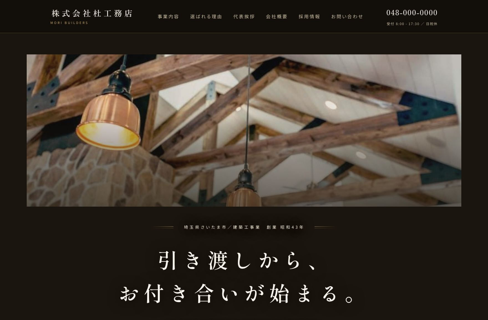
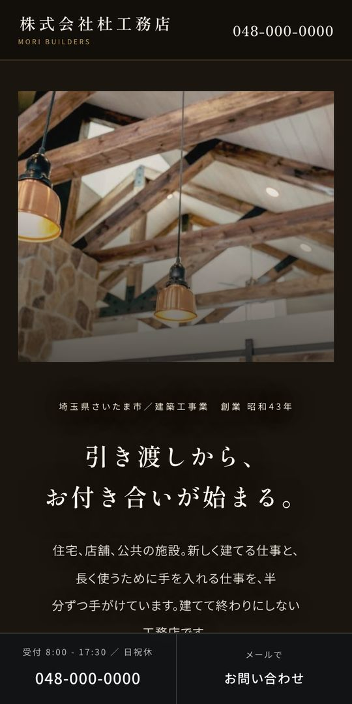
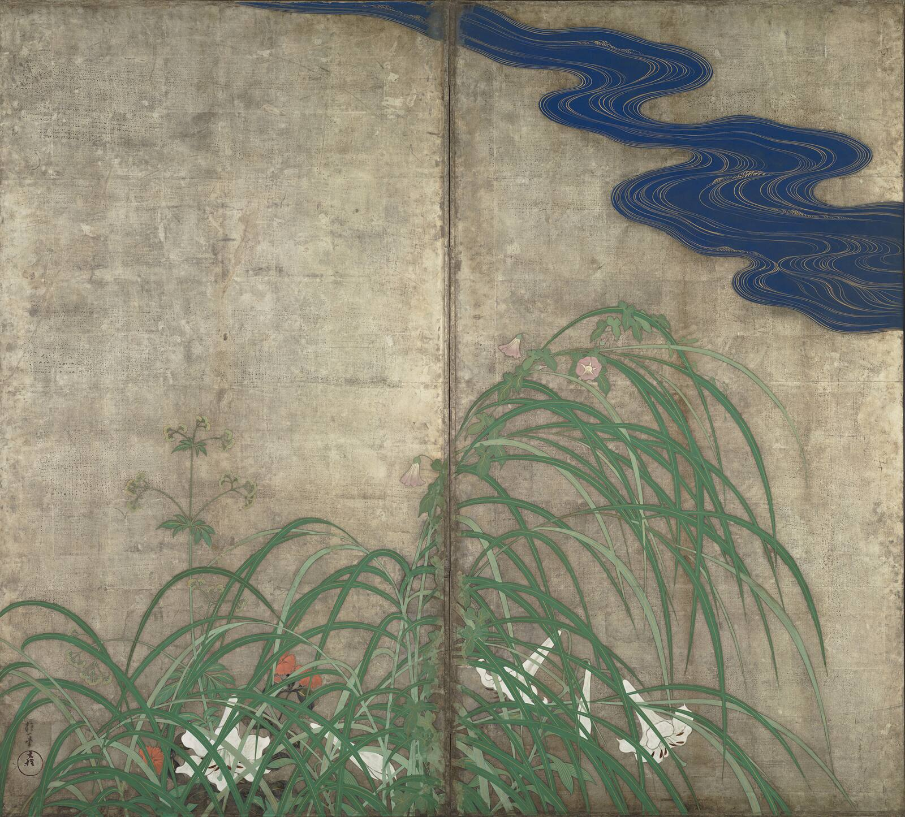
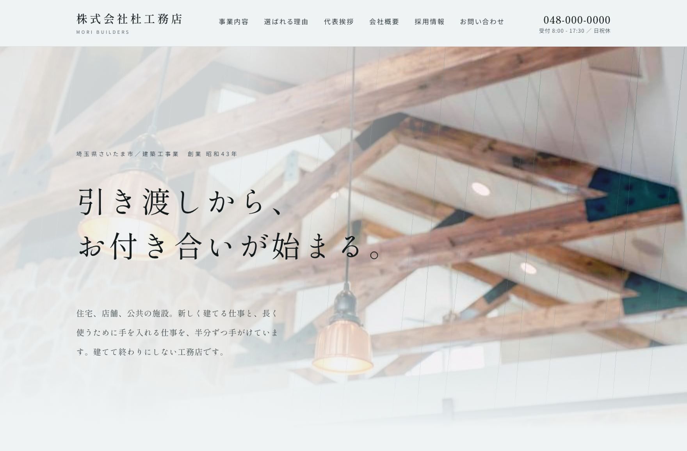
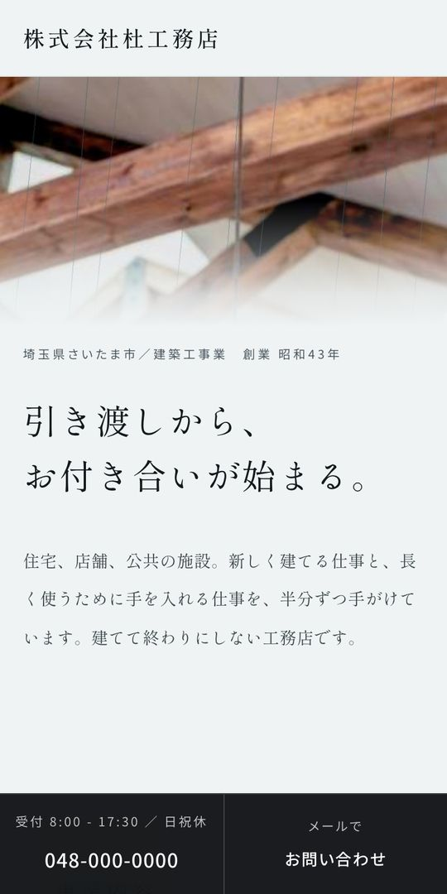

MORIKOSHA / DESIGN & DIGITAL CRAFT
New website, ¥98,000 per page (tax incl.) | Morikosha
Make good work
easy to find.
We build a company website in one page, in about two weeks.
Morikosha is a web studio that connects the work and knowledge of those who make things to the people who search for and choose them.
The strengths of a company or product tend to stay locked inside the people who know them.Morikosha shapes that information so it reaches people on the web, and builds an entrance between you and the people who need it.


- Price1 page¥98,000 (tax incl.)One-time purchase · no monthly fees.
- DeliveryAbout 2 weeksAfter we receive your text and your photos
- Samples24 industry samplesCivil engineering, surveying, construction, building services, electrical work, landscaping, painting, demolition and more
Applicants and customers alike
search for a company name first.
If nothing comes up, they stop there ── three reasons.
They stop one step before applying
The job-openings-to-applicants ratio for construction, civil engineering and surveying engineers is 6.05 times, against an all-occupation average of 1.11 times: roughly 5.5 times higher. What is more, about 60% of people who changed jobs looked at the recruitment site of the company they chose to join. Someone who sees a job posting, becomes interested, searches the company name and finds nothing stops right there. It happens one step before the act of applying.
The job-openings-to-applicants ratio is from the Ministry of Health, Labour and Welfare, “General Employment Referral Statistics,” May 2026, regular employment (excluding part-time). The recruitment-site viewing rate is from Baiji Inc., “Survey on the Use of Recruitment Sites in Mid-Career Hiring, FY2024 Edition” (2024; working adults who job-hunted within the past 5 years; 3,317 people).
The way into your work narrows
A main contractor’s screening, a client’s background check, a referral from a peer: all begin by searching the company name. If it is not clear what you can do right there, they move on to the next candidate. One page showing your track record becomes the entrance to going further.
Search use: Ministry of Internal Affairs and Communications, “Communications Usage Trend Survey (Households),” 2025 (74.8% of internet users, 75.7% of those in their 60s). Checking official sites: Consumer Affairs Agency, “Basic Survey on Consumer Awareness,” FY2022 (78.0% “check whether it is the official site” when booking or buying online, n=3,311).
Where AI looks for sources, your company is missing
More people are researching with AI such as ChatGPT. People who have used generative AI now exceed half of the population.Within a year the share has roughly doubled.AI Overviews cite pages found through search as references, so a company’s official page becomes a candidate source.
Generative AI use: Ministry of Internal Affairs and Communications, 2026 White Paper on Information and Communications (online monitor survey of ages 20 to 69, equal numbers per age group; 52.2%, previous year 26.7%).AI Overviews show the pages they drew on, as stated in Google Search Central, “AI features and your website” (updated December 2025).

Your work, understood:
your company on a single sheet.
Five designs drawn from Japanese aesthetics. We stripped away ornament and kept only what will not age as times change.
From the samples for 24 industries
Pick any one close to your companyFrom the list below, choose the industry closest to yours. The five options for that industry will appear.


The idea behind the design
TanAwai
Rain-washed white, and the streaks of rain.
Tan is a word for a state in which a little color or sound remains. Not saying everything outright, and not showing everything, are things Japan has long held to be beautiful. We turned that sense into a single sheet of paper, in the form of a sky after rain. The ground is rain-washed white, and the door carries just two slanting streaks of rain. The type is a fine Mincho, and not a single decorative rule is drawn. Having decided not to draw any, we mark the change between sections only with the breadth of the margin. Of the five options, this is the one with the largest margins.
Best for design offices, landscaping firms and other companies that want to convey care and feeling quietly.
GenGen
Photos, sunk into darkness.
Gen means black, and at the same time something so deep that it is not easily seen. The gen of yūgen, the gen of kurōto. In the Japanese aesthetic, not showing something can make it appear deeper. We applied that idea to the photograph on the door. Over the photo lies a single veil of unchanging density. Without thickening or thinning it, we sink the photo from edge to edge into the same darkness, so it does not vanish but quietly recedes into the depth. A single fine silver axis runs down the left. Body text and subheadings are set in a monospaced face, giving a machine-like precision. The black is not one color but a gradation tinged with blue.
Best for design offices, painting and architectural design firms that want to be chosen for their design sense and quiet intensity.
MiyabiMiyabi
Ink like lamplight, with fine lines of gold.
Miyabi is a word for the beauty that remains after roughness is stripped away. Not raising the voice, not hurrying, attending only to details. We composed the sense that courtiers refined over a thousand years as the furnishings of a room at night. The ground is warm ink like candlelight. Gold is never used on surfaces, only on fine lines and small characters. Photos are not pasted onto the paper but hung in a thin gold frame. As with a hanging scroll in an alcove, this is the only type among the five options where the image is not cropped to the edge. The letter-spacing is generous because we want you to read without hurrying.
Best for long-established construction companies, landscaping firms and shrine and temple work, which want to put history and dignity forward.
IkiIki
Only fine vertical lines, in indigo.
Iki is what remains after the ornament is stripped away. In The Structure of “Iki”, Shūzō Kuki wrote that iki prefers vertical stripes to horizontal ones, and thin stripes to thick. The thinner, the more iki. So this design is built from fine vertical lines alone. No bold type anywhere, and every rule held to a single thin weight. Color fills only one place, at the foot. It is a design decided not by what to add, but by what to keep. It suits companies that carry nothing superfluous.
Best for Electrical work, building services, surveying, civil engineering and other trades that earn trust through precise scheduling and quick response are a good fit.
Ri
One line, carried through.
Ri originally meant the grain of jade. Polish a stone and straight lines appear in it. From there the word came to mean “the logic of things,” and in Japanese we still say “to hold one’s line” and “to be reasonable.” So this design is built on a single line. The title, company name and section headings run vertically, while body text and contact details stay horizontal and easy to read. Paper color, and a mounting reminiscent of a hanging scroll. Lines kept to one thin weight, and color limited to paper, ink and a single seal. It does not catch the eye with ornament; it speaks by never bending the line it chose, to the very end.
Best for Long-established construction, civil engineering and landscaping firms, and those whose work rests on inherited craft, such as shrines and temples, stonework and scroll mounting are a good fit.
What goes on the site is not a fixed list of items; we write it for your company from what you tell us. Photos and text are your own, and colors are adjusted to your company at no charge, so even placed side by side with another company that chose the same design, yours won’t look like the same site.
All you choose is the form. That is why we can deliver a one-page site for ¥98,000 (tax incl.), in about two weeks.
Pricing
When building a website
New website (from the five design options)
¥98,000(tax incl.)One-page layout, smartphone-friendly. We hand over the complete set of HTML files. A one-time purchase, with no monthly fees.
Already have a website?
¥98,000(tax incl.)Renewal of an existing site costs the same and has its own page. For a renewal, parts of the design may differ from the samples depending on the content of your current site. See website renewal →
Publishing setup service (optional, on request)
¥48,000(tax incl.)We handle everything up to putting the site online. Not needed if you can do it yourself. The details are explained below.
When making changes later
Text edits
Per edit¥18,000(tax incl.)The layout stays as it is; we replace the text.
Photo replacement
Per edit¥18,000(tax incl.)We swap in the photos you send us.
After delivery, during the two-week review period, we will fix things free of charge, one time only. The prices above apply to changes made after that period.
Websites outside the five template designs are quoted on request. All prices include tax. There are no other charges for production. The data is yours. Payment terms are set out in the contract once your order is confirmed.
After launch, the only costs are for the server and domain you contract in your company’s name: usage fees of about ¥8,000–20,000 a year combined. None of this is paid to us.
For seven days after launch, we fix display problems such as broken layouts or garbled text free of charge.
What the publishing setup includes
What is included, and the steps if you do it yourself (11 steps)
What we deliver is a set of HTML files. If you can upload them to a server yourself, you do not need this service. If you think “I don’t know how” or “I’m nervous about touching it,” we handle everything up to putting the site online for you.
We handle this whole set for ¥48,000 (tax incl.), one time only. There are no monthly fees. The usage fees for the server and domain are paid by your company, roughly ¥8,000–20,000 a year combined. Because the contracts are in your company’s name, the website stays with you.
If you do it yourself, it goes roughly like this.
- Sign up for a server
- Register a custom domain
- Whois privacy (public information proxy)
- Change the nameservers
- Wait for DNS propagation (up to 72 hours)
- Issue an SSL certificate
- Connect via FTP
- Upload to public_html
- Unify www and https in .htaccess
- Search Console registration
- Submit the sitemap
The order and waiting times are fixed, and skipping a step means starting over. If you apply for SSL without waiting for propagation, issuance fails, and putting the files one level off means the page will not display.
How to order
Takes about 10 minutes
Browse the samples
Look through the five designs: Tan, Gen, Miyabi, Iki and Ri. Press a tab and it appears in the sample window. If you cannot decide, we can choose together as we talk.
Takes a moment
Start with a conversation
A single line is enough
Tell us which design caught your eye, about your current website, or whatever is on your mind. Online meetings, email, phone calls, or a simple form: we listen in whichever way suits you. If time is short, you can also answer a few questions in our form (in Japanese). We think through together whether it is a new site or a renewal.
Takes as suits you
We listen carefully
Once you decide to order
We take time to hear your company's story, the care you put into your work, and what you want customers to know. No ready-made text needed: we write it from our conversation. Just send the photos you have. For a renewal, we carry content over from your current website.
Takes about two weeks
See the finished site
Once we have your story and photos, we finish the site in about two weeks. If anything comes up along the way, just let us know.
Frequently asked questions
I have no photos. Can you still make one?
Yes, we can. Photos taken with a smartphone are enough. The scene on site, heavy machinery, finished structures, your office or building: with 5 to 10 photos of these, we can make it work. They do not need to be beautifully shot. In fact, photos of your real sites come across better.
Where preparing photos is difficult, you can use the ones in our samples (free stock images cleared for commercial use) as they are.
I’m not good at writing.
No need to worry. You don’t have to write anything yourself. We listen to you and shape it into text. For a renewal, we build on the text of your current website.
What should we tell you?
Tell us your story and what you take pride in. We listen carefully. Online meetings, email, phone calls, or filling in a simple form: we hear your requests in whichever way suits you. Then we shape what we hear into something that reaches people.
Are there monthly fees?
There are no monthly fees to us for website production. The production fee is all you pay.
After launch, the only costs are those for a server and domain contracted in your company’s name: the usage fees (about ¥8,000–20,000 a year combined). You pay these directly to each provider; we receive none of it.
For requests like fixing wording or adding an article, we take each inquiry as it comes. If you do not use us, no charges arise.
Won’t my site look the same as other companies’?
We offer the same designs to several companies. That is the reason for this price. However, photos, text and company information are all replaced with yours, and the color scheme can be changed to match your company at no charge, so even side by side, they won’t look like the same site.
I’m outside Saitama Prefecture. Can I still order?
Yes, we can. Everything is handled by email and data, so you can order from anywhere in Japan.
Can the sample text be changed?
Yes. We keep the layout as it is and write all the text from your own content.
After delivery, during the two-week review period, we make corrections once only, free of charge. After that period, text edits and photo replacements are charged per edit at ¥18,000 (tax incl.) each.